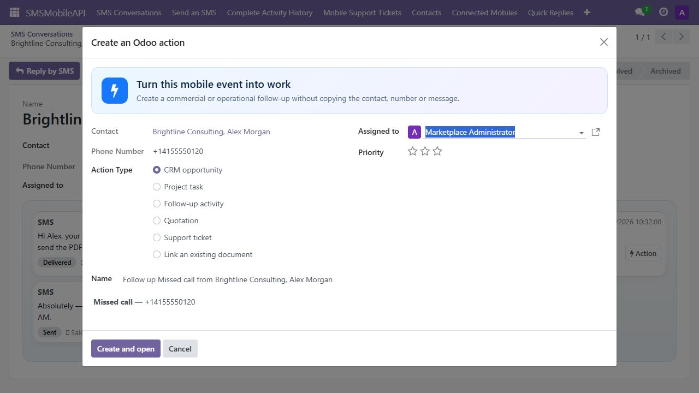

Reply without leaving the customer record
Read the chronological SMS conversation, see call events, filter by connected mobile and reply from the same contact page.

Send from contacts and business documents, manage team conversations, and bring received SMS plus missed, incoming and outgoing call activity back to the matching customer record.
Messages leave through the SIM in a mobile connected to SMSMobileAPI. Select a device or use the first available gateway.
Use a shared inbox with ownership, unread counts, priorities, internal notes and one-click replies.
Turn an SMS or missed call into an opportunity, task, follow-up, quotation or support ticket.
Read the chronological SMS conversation, see call events, filter by connected mobile and reply from the same contact page.
Search by contact, company or number. Assign ownership, mark conversations read, handled, priority or archived, and keep internal notes invisible to the correspondent.



Missed, incoming and outgoing call metadata is matched to the contact by international phone number and displayed alongside SMS activity. No call audio is accessed.

This module requires a SMSMobileAPI account, an active API key and the official SMSMobileAPI mobile application connected to that account. Availability depends on the SMS and call permissions enabled by the user in the mobile application.
Before any connection test, send, synchronization, mobile permission check or webhook ingestion, an Odoo manager must read and actively accept the in-app disclosure. Consent time, user and disclosure version are recorded. Withdrawing consent disables automatic synchronization and webhook ingestion.
No call audio is accessed or transferred. Data is exchanged over HTTPS to send SMS from the connected mobile and synchronize only the activity selected by the Odoo administrator.
Privacy information is available in the SMSMobileAPI privacy policy at smsmobileapi.com/privacy-policy/.
Connect with the account API key, accept the disclosure, select the exact channels to synchronize, and verify mobile permission status directly in Odoo.